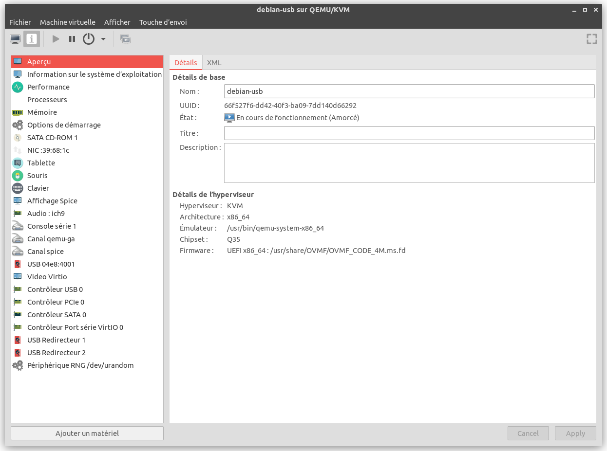
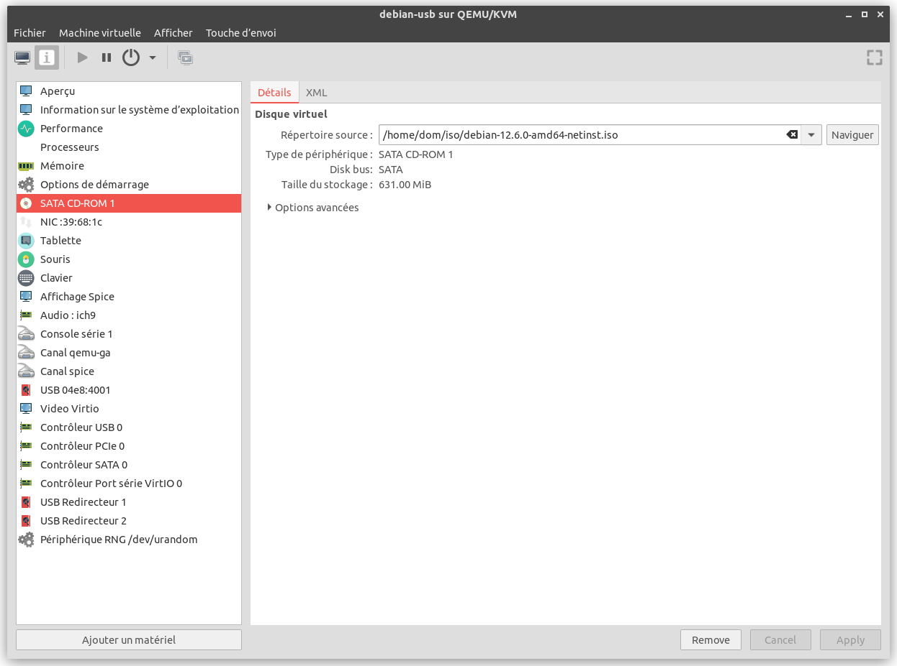
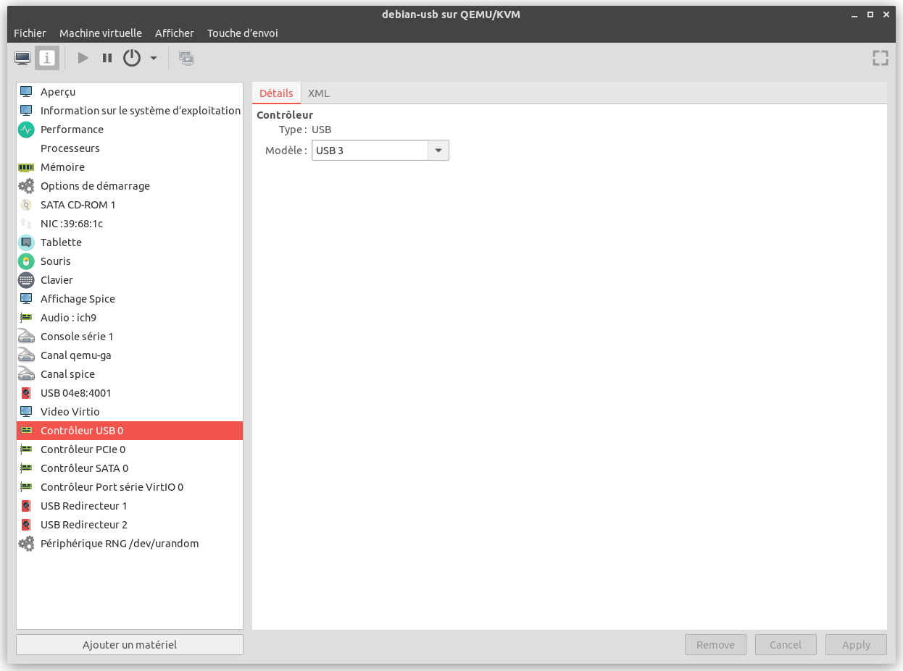
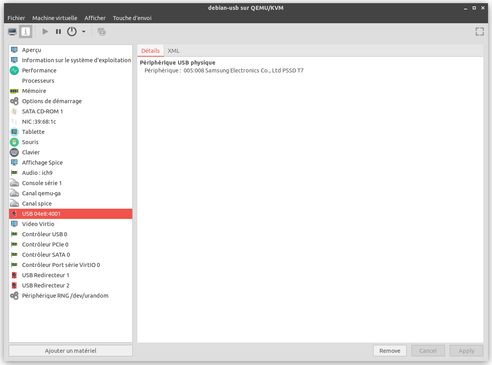

SYSNIX - Debian 12, création d'un disque externe USB bootable
Ce document décrit l'installation de la distribution Debian 12 sur un disque externe USB bootable.
dominique huguenin (dominique.huguenin@rpn.ch) -Marche à suivre
- Créer une machine virtuelle kvm avec virt-manager avec comme configuration:
- utilisation du firmware EFI
- stockage une disque externe USB
- Démarrer la VM sur le live CD téléchargé dans Obtenir
- Formater le disque externe selon nos besoins
- Installer le système d’exploitation
- Vérifier
Création de la machine virtuelle kvm avec virt-manager
- Télécharger l’iso Debian 12, ISO « netinst » pour PC 64 bits
- Créer la machine virtuelle
- Démarrer la machine
Configuration de la machine avec libvirt
-
Aperçu de la machine

-
Configuration du CD-ROM

-
Configuration du contrôleur USB 3

-
Ajout du disque physique externe

Configuration du firmware EFI
- remplacer la configuration ci-dessous:
<os> <type arch="x86_64" machine="q35">hvm</type> <boot dev="cdrom"/> </os> - par la suivante:
<os firmware="efi"> <type arch="x86_64" machine="q35">hvm</type> <boot dev="cdrom"/> <firmware> <feature enabled="yes" name="secure-boot"/> <feature enabled="yes" name="enrolled-keys"/> </firmware> </os>
Configuration complète
```shell
$ virsh dumpxml debian-usb
<domain type='kvm' id='1'>
<name>debian-usb</name>
<uuid>66f527f6-dd42-40f3-ba09-7dd140d66292</uuid>
<metadata>
<libosinfo:libosinfo xmlns:libosinfo="http://libosinfo.org/xmlns/libvirt/domain/1.0">
<libosinfo:os id="http://debian.org/debian/12"/>
</libosinfo:libosinfo>
</metadata>
<memory unit='KiB'>4194304</memory>
<currentMemory unit='KiB'>4194304</currentMemory>
<vcpu placement='static'>4</vcpu>
<resource>
<partition>/machine</partition>
</resource>
<os>
<type arch='x86_64' machine='pc-q35-6.2'>hvm</type>
<firmware>
<feature enabled='yes' name='enrolled-keys'/>
<feature enabled='yes' name='secure-boot'/>
</firmware>
<loader readonly='yes' type='pflash'>/usr/share/OVMF/OVMF_CODE_4M.ms.fd</loader>
<nvram template='/usr/share/OVMF/OVMF_VARS_4M.ms.fd'>/var/lib/libvirt/qemu/nvram/debian-usb_VARS.fd</nvram>
<boot dev='cdrom'/>
</os>
<features>
<acpi/>
<apic/>
<vmport state='off'/>
<smm state='on'/>
</features>
<cpu mode='host-passthrough' check='none' migratable='on'/>
<clock offset='utc'>
<timer name='rtc' tickpolicy='catchup'/>
<timer name='pit' tickpolicy='delay'/>
<timer name='hpet' present='no'/>
</clock>
<on_poweroff>destroy</on_poweroff>
<on_reboot>destroy</on_reboot>
<on_crash>destroy</on_crash>
<pm>
<suspend-to-mem enabled='no'/>
<suspend-to-disk enabled='no'/>
</pm>
<devices>
<emulator>/usr/bin/qemu-system-x86_64</emulator>
<disk type='file' device='cdrom'>
<driver name='qemu' type='raw'/>
<source file='/home/dom/iso/debian-12.6.0-amd64-netinst.iso' index='1'/>
<backingStore/>
<target dev='sda' bus='sata'/>
<readonly/>
<alias name='sata0-0-0'/>
<address type='drive' controller='0' bus='0' target='0' unit='0'/>
</disk>
<controller type='usb' index='0' model='qemu-xhci' ports='15'>
<alias name='usb'/>
<address type='pci' domain='0x0000' bus='0x02' slot='0x00' function='0x0'/>
</controller>
<controller type='pci' index='0' model='pcie-root'>
<alias name='pcie.0'/>
</controller>
<controller type='pci' index='1' model='pcie-root-port'>
<model name='pcie-root-port'/>
<target chassis='1' port='0x10'/>
<alias name='pci.1'/>
<address type='pci' domain='0x0000' bus='0x00' slot='0x02' function='0x0' multifunction='on'/>
</controller>
<controller type='pci' index='2' model='pcie-root-port'>
<model name='pcie-root-port'/>
<target chassis='2' port='0x11'/>
<alias name='pci.2'/>
<address type='pci' domain='0x0000' bus='0x00' slot='0x02' function='0x1'/>
</controller>
<controller type='pci' index='3' model='pcie-root-port'>
<model name='pcie-root-port'/>
<target chassis='3' port='0x12'/>
<alias name='pci.3'/>
<address type='pci' domain='0x0000' bus='0x00' slot='0x02' function='0x2'/>
</controller>
<controller type='pci' index='4' model='pcie-root-port'>
<model name='pcie-root-port'/>
<target chassis='4' port='0x13'/>
<alias name='pci.4'/>
<address type='pci' domain='0x0000' bus='0x00' slot='0x02' function='0x3'/>
</controller>
<controller type='pci' index='5' model='pcie-root-port'>
<model name='pcie-root-port'/>
<target chassis='5' port='0x14'/>
<alias name='pci.5'/>
<address type='pci' domain='0x0000' bus='0x00' slot='0x02' function='0x4'/>
</controller>
<controller type='pci' index='6' model='pcie-root-port'>
<model name='pcie-root-port'/>
<target chassis='6' port='0x15'/>
<alias name='pci.6'/>
<address type='pci' domain='0x0000' bus='0x00' slot='0x02' function='0x5'/>
</controller>
<controller type='pci' index='7' model='pcie-root-port'>
<model name='pcie-root-port'/>
<target chassis='7' port='0x16'/>
<alias name='pci.7'/>
<address type='pci' domain='0x0000' bus='0x00' slot='0x02' function='0x6'/>
</controller>
<controller type='pci' index='8' model='pcie-root-port'>
<model name='pcie-root-port'/>
<target chassis='8' port='0x17'/>
<alias name='pci.8'/>
<address type='pci' domain='0x0000' bus='0x00' slot='0x02' function='0x7'/>
</controller>
<controller type='pci' index='9' model='pcie-root-port'>
<model name='pcie-root-port'/>
<target chassis='9' port='0x18'/>
<alias name='pci.9'/>
<address type='pci' domain='0x0000' bus='0x00' slot='0x03' function='0x0' multifunction='on'/>
</controller>
<controller type='pci' index='10' model='pcie-root-port'>
<model name='pcie-root-port'/>
<target chassis='10' port='0x19'/>
<alias name='pci.10'/>
<address type='pci' domain='0x0000' bus='0x00' slot='0x03' function='0x1'/>
</controller>
<controller type='pci' index='11' model='pcie-root-port'>
<model name='pcie-root-port'/>
<target chassis='11' port='0x1a'/>
<alias name='pci.11'/>
<address type='pci' domain='0x0000' bus='0x00' slot='0x03' function='0x2'/>
</controller>
<controller type='pci' index='12' model='pcie-root-port'>
<model name='pcie-root-port'/>
<target chassis='12' port='0x1b'/>
<alias name='pci.12'/>
<address type='pci' domain='0x0000' bus='0x00' slot='0x03' function='0x3'/>
</controller>
<controller type='pci' index='13' model='pcie-root-port'>
<model name='pcie-root-port'/>
<target chassis='13' port='0x1c'/>
<alias name='pci.13'/>
<address type='pci' domain='0x0000' bus='0x00' slot='0x03' function='0x4'/>
</controller>
<controller type='pci' index='14' model='pcie-root-port'>
<model name='pcie-root-port'/>
<target chassis='14' port='0x1d'/>
<alias name='pci.14'/>
<address type='pci' domain='0x0000' bus='0x00' slot='0x03' function='0x5'/>
</controller>
<controller type='sata' index='0'>
<alias name='ide'/>
<address type='pci' domain='0x0000' bus='0x00' slot='0x1f' function='0x2'/>
</controller>
<controller type='virtio-serial' index='0'>
<alias name='virtio-serial0'/>
<address type='pci' domain='0x0000' bus='0x03' slot='0x00' function='0x0'/>
</controller>
<interface type='network'>
<mac address='52:54:00:39:68:1c'/>
<source network='default' portid='a61e4a76-ecfc-4a16-8ba2-223b5f3d47d8' bridge='virbr0'/>
<target dev='vnet0'/>
<model type='virtio'/>
<alias name='net0'/>
<address type='pci' domain='0x0000' bus='0x01' slot='0x00' function='0x0'/>
</interface>
<serial type='pty'>
<source path='/dev/pts/7'/>
<target type='isa-serial' port='0'>
<model name='isa-serial'/>
</target>
<alias name='serial0'/>
</serial>
<console type='pty' tty='/dev/pts/7'>
<source path='/dev/pts/7'/>
<target type='serial' port='0'/>
<alias name='serial0'/>
</console>
<channel type='unix'>
<source mode='bind' path='/var/lib/libvirt/qemu/channel/target/domain-1-debian-usb/org.qemu.guest_agent.0'/>
<target type='virtio' name='org.qemu.guest_agent.0' state='disconnected'/>
<alias name='channel0'/>
<address type='virtio-serial' controller='0' bus='0' port='1'/>
</channel>
<channel type='spicevmc'>
<target type='virtio' name='com.redhat.spice.0' state='disconnected'/>
<alias name='channel1'/>
<address type='virtio-serial' controller='0' bus='0' port='2'/>
</channel>
<input type='tablet' bus='usb'>
<alias name='input0'/>
<address type='usb' bus='0' port='2'/>
</input>
<input type='mouse' bus='ps2'>
<alias name='input1'/>
</input>
<input type='keyboard' bus='ps2'>
<alias name='input2'/>
</input>
<graphics type='spice' port='5900' autoport='yes' listen='127.0.0.1'>
<listen type='address' address='127.0.0.1'/>
<image compression='off'/>
</graphics>
<sound model='ich9'>
<alias name='sound0'/>
<address type='pci' domain='0x0000' bus='0x00' slot='0x1b' function='0x0'/>
</sound>
<audio id='1' type='spice'/>
<video>
<model type='virtio' heads='1' primary='yes'/>
<alias name='video0'/>
<address type='pci' domain='0x0000' bus='0x00' slot='0x01' function='0x0'/>
</video>
<hostdev mode='subsystem' type='usb' managed='yes'>
<source>
<vendor id='0x04e8'/>
<product id='0x4001'/>
<address bus='5' device='8'/>
</source>
<alias name='hostdev0'/>
<address type='usb' bus='0' port='1'/>
</hostdev>
<redirdev bus='usb' type='spicevmc'>
<alias name='redir0'/>
<address type='usb' bus='0' port='3'/>
</redirdev>
<redirdev bus='usb' type='spicevmc'>
<alias name='redir1'/>
<address type='usb' bus='0' port='4'/>
</redirdev>
<memballoon model='virtio'>
<alias name='balloon0'/>
<address type='pci' domain='0x0000' bus='0x04' slot='0x00' function='0x0'/>
</memballoon>
<rng model='virtio'>
<backend model='random'>/dev/urandom</backend>
<alias name='rng0'/>
<address type='pci' domain='0x0000' bus='0x05' slot='0x00' function='0x0'/>
</rng>
</devices>
<seclabel type='dynamic' model='apparmor' relabel='yes'>
<label>libvirt-66f527f6-dd42-40f3-ba09-7dd140d66292</label>
<imagelabel>libvirt-66f527f6-dd42-40f3-ba09-7dd140d66292</imagelabel>
</seclabel>
<seclabel type='dynamic' model='dac' relabel='yes'>
<label>+64055:+109</label>
<imagelabel>+64055:+109</imagelabel>
</seclabel>
</domain>
```
Installation du système d’exploitation
Formatage du disque externe
Plan de partitionnement
.------------------------------------------------------------------------------------------------------------------.
| /dev/sdx |
+-----------+-----------+----------------------------------------------------------------+-------------------------+
| /dev/sdx1 | /dev/sdx2 | /dev/sdx3 |
| 500MB | 500MB | 250GB |
| | +----------------------------------------------------------------+
| | | LVM |
| | +----------------------------------------------------------------+
| | | debian-usb-vg (VG) |
| | +---------------+----------------+-----------------+-------------+
| | | swap (2G)(LV) | root (50G)(LV) | home (100G)(LV) |
+-----------+-----------+---------------+----------------+-----------------+
|EFI System | ext2 | swap | ext4 | ext4 |
|boot | | | |
+-----------+-----------+---------------+----------------+-----------------+
| | /boot | | /root | /home |
+-----------+-----------+---------------+----------------+-----------------+
Suite de l’installation
Pour l’installation du système suivre le document SYSNIX - OS - Installation GNU/Linux Ubuntu Server
Installation de la partition EFI
Vérification
- Redémarrer votre machine physique en choisissant le disque externe USB comme périphérique de démarrage
Vérifier dans le bios que:
- votre machine physique peut démarrer sur un support USB
- l’option
secure bootsoit déactivée.